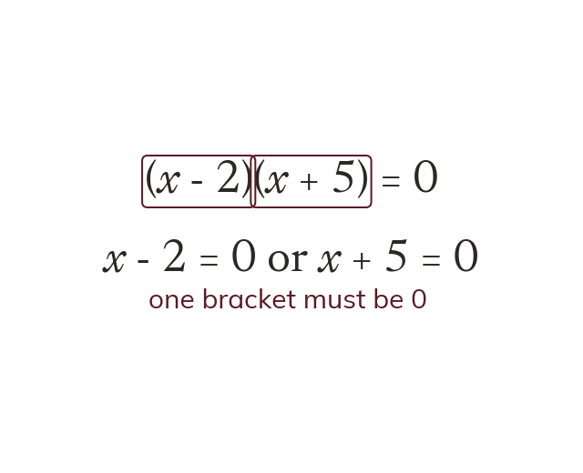
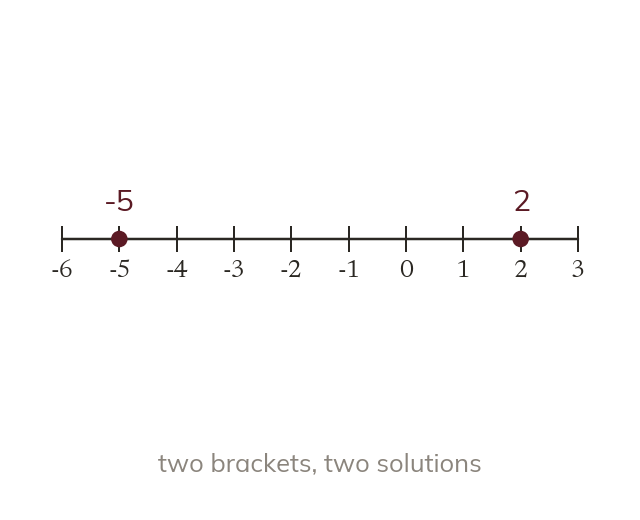
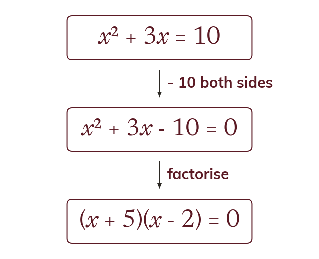
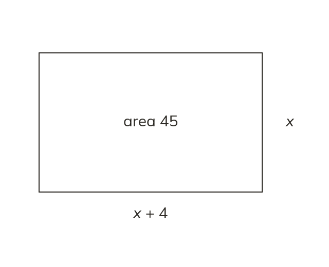

A product of zero
If two numbers multiply to one of them is
So if one bracket is
If two numbers multiply to make at least one of them is
So in one of the two brackets must be
So in one of the two brackets must be
A quadratic equation can have two answers, and factorising finds both at once. It is how a height, a length or a time is found from a quadratic.
Work down the page at your own pace. Write every answer in your book first, then click to check it.
Read each card, then follow the worked examples one step at a time.

If two numbers multiply to one of them is
So if one bracket is

Each bracket gives its own solution. So gives
And gives
Pick an answer. If it's wrong, the feedback tells you which mistake it was.
Read each card, then follow the worked examples one step at a time.

The rule works only when one side is
So rearrange first. Subtract from both sides.

A length cannot be negative, so reject that solution. Here or and only is kept.
Pick an answer. If it's wrong, the feedback tells you which mistake it was.
Finished? Next lesson: 10.17.5 Plotting a Quadratic Curve.
Log in, then search for a code to practise that skill.